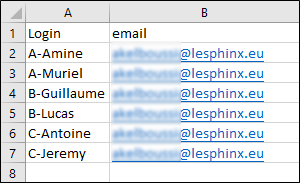
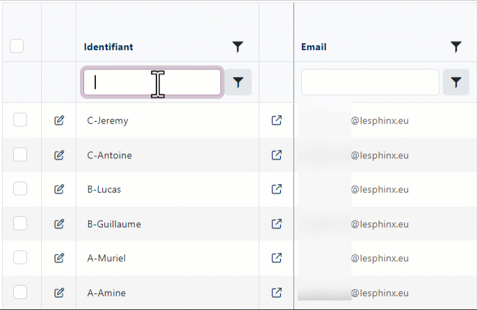
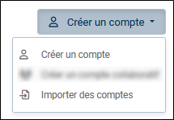
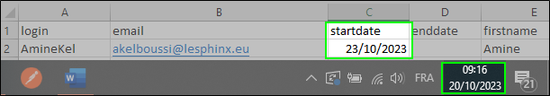

Créer un compte
Il existe trois méthodes pour créer un compte à savoir :
Création d'un compte manuellement, création par import de fichier ou création à partir de clés d'accès.
-
Connectez-vous sur votre compte administrateur.
-
Cliquez sur Administration (en haut à droite de votre écran).
Depuis cette interface choisissez la méthode de création du compte :
 Créer manuellement un compte
Créer manuellement un compte
-
Cliquer sur le bouton Créer un compte.
-
Renseigner les informations demandées.
-
Identifiant (Seuls les lettres, chiffres, tirets et underscores sont acceptés).
-
Adresse e-mail.
-
Date d’ouverture / fermeture.
REMARQUE : Si la date d'ouverture définie est différente de la date de création du compte, l'utilisateur recevra l'e-mail de création à la date spécifiée dans le champ "Date ouverture".
-
-
(Facultatif) Remplir les informations concernant le profil : nom, prénom, téléphone, société, langue.
-
Définir les droits à allouer au compte à créer.
Il est possible d'activer ou de désactiver certains droits. Ex : L'import de données externe ou l'accès à l'assistant IA.
La répartition des crédits (réponses, emailing, SMS, codage au fil de l'eau et crédits IA) se fait en fonction du nombre de comptes pouvant être créés.
EXEMPLE : Un compte administrateur, pouvant créer 10 comptes utilisateurs et disposant d’un "crédit IA" de 50000, verra par défaut 5000 crédits alloués à chaque compte utilisateur créé (50000/10).
L'activation du consentement IA sur le compte à créer nécessite l’acceptation des conditions générales spécifiques aux assistants IA.
Après avoir coché l'option "Consentement", suivre les étapes suivantes :
L’acceptation des conditions générales spécifiques aux assistants IA est requise.
-
Lisez attentivement les conditions générales spécifiques aux assistants IA.
-
Cochez la case suivante :
-
"Je reconnais avoir accepté sans réserve l'addendum "Assistant IA" affiché ci-dessus et je déclare être le représentant légal du titulaire de ce compte ou avoir le pouvoir de le représenter valablement et être conscient d'engager ma responsabilité en cas de déclaration mensongère"
-
-
Cliquez sur le bouton J'accepte.
-
-
Définir les limites :
-
Nombre de réponses possibles par enquête.
-
Nombre maximum de questions par enquête.
-
Nombre maximum d'enquêtes pouvant être créées.
-
-
Cliquer sur le bouton ENREGISTRER.
Le compte est désormais créé. Un e-mail de validation est immédiatement envoyé à l'adresse associée.
L'utilisateur doit cliquer sur le lien reçu par mail afin de confirmer son adresse e-mail et définir un mot de passe pour accéder à son compte.
REMARQUE : Le lien est valable pour 96 heures.
Créer des comptes par import de fichier
La création de comptes par import de fichier vous permet de gagner un temps précieux lorsque vous avez plusieurs utilisateurs.
Si vous êtes amener à créer des comptes pour différents groupes d'utilisateurs (différentes promotions au sein d'une école, etc...). Vous pouvez les différencier en ajoutant un préfixe à l'identifiant (colonne "Login"). Ceci vous facilitera la recherche et l'identification de comptes à modifier ou supprimer pour un groupe donné par la suite.
EXEMPLE : Dans cet exemple simplifié, nous importerons 3 groupes d'utilisateurs, un groupe avec le préfixe "A-", un autre avec le préfixe "B-" et un dernier avec le préfixe "C-".

Il suffit par la suite d'effectuer une recherche depuis le champ Identifiant en se basant sur le préfixe afin de retrouver tous les comptes du groupe concerné.
Cliquez sur l'image ci-dessus pour un aperçu animéPour créer des comptes en important un fichier, procédez comme suit :
-
Cliquez sur Créer un compte puis sur Importer des comptes.

-
Cliquez sur le bouton Sélectionner le fichier... pour télécharger le fichier à utiliser.
REMARQUE : Type de fichier autorisé (".txt", ".csv", ".xlsx").
Le fichier doit obligatoirement comporter les deux colonnes suivantes :
-
Login : nom du compte.
-
Email : Adresse e-mail du compte.
Colonnes facultatives :
-
firstname / lastname : Prénom & nom de l'utilisateur.
-
startdate : Correspond à la date d'ouverture du compte.
Cette colonne est à utiliser lorsque vous souhaitez planifier l'ouverture d'un compte à une date ultérieure.
Il faut savoir que lorsqu’un compte est créé, l'utilisateur doit confirmer son adresse e-mail et définir son mot de passe en cliquant sur le lien reçu par mail. Ce dernier n'est valable que pendant 96 heures.
Il est donc recommandé de :
-
Procéder à la création des comptes en début de semaine, plutôt que le vendredi, étant donné que les utilisateurs ont tendance à ne pas vérifier leur courriel le week-end.
ou
-
Définir une date d'ouverture dans la colonne startdate, ce qui permettra l'envoi de l'e-mail de confirmation à cette date et non à la date de création du compte (lors de l'importation du fichier).
EXEMPLE : Nous procédons à la création des comptes le vendredi 20/10/2023. Les utilisateurs seront notifiés par e-mail à partir du lundi 23/10/2023 (date d'ouverture) comme paramétré dans le fichier à importer. (Voir la capture ci-dessous).

-
-
enddate : Correspond à la date de fermeture du compte.
REMARQUE : Si aucune date n'est renseignée au niveau de la colonne enddate ou que cette dernière n'est pas présente dans le fichier à importer, le compte héritera de la date de fermeture du compte administrateur.
Vous pouvez télécharger un fichier exemple en cliquant sur le lien sample_admin_import_accounts.xlsx.
La première ligne est toujours considérée comme contenant le nom des colonnes.
-
-
Un récapitulatif s'affichera suite à l'import (nombre d'utilisateurs qui seront crées, messages d'erreur / avertissements en cas de problème - par exemple un identifiant déjà existant).
-
Cliquez sur le bouton Créer x compte(s) pour valider la création.
Créer des comptes à partir de clés d'accès
-
Cliquez sur le bouton Clés d'accès.
-
Cliquez sur le bouton Générer des clés d'accès.
-
Indiquez le nombre de clés que vous souhaitez générer puis cliquez sur OK pour valider.
Les clés générées s'afficheront dans le tableau.
-
Cliquez sur le bouton Envoyer les clés par mails.
-
Renseignez les adresses e-mails des futurs utilisateurs.
REMARQUE : Vous devez renseigner une seule adresse e-mail par ligne.
EXEMPLE : Dans notre exemple, nous avons 5 clés d'accès disponibles, cela veut dire que si nous insérons 15 adresses e-mail, seules les 5 premières adresses seront prises en compte pour l'envoi.
L'option Utiliser les clés disponibles parmi celles qui ont été diffusés par mail autorise la réutilisation des clés expirées (suite à la non création de compte au bout de 96 h) dans votre envoi.
-
Cliquez sur OK pour valider l'envoi des clés.
Les informations concernant chaque clé générée peuvent être consultées directement depuis le tableau.
Date de la dernière diffusion de la clé / l'adresse e-mail utilisée lors de la dernière diffusion, le nom du compte ayant activé la clé, état de la clé (clé utilisée ou non).
Si besoin, la liste de clés peut être exportée au format .xlsx en cliquant sur le bouton Exporter la liste de clés.
REMARQUE : L'export tient en compte les tris/filtres appliqués dans le tableau.
Procédure de création de compte à partir d'une clé d'accès (coté utilisateur)
Ci-dessous un exemple de mail qui sera envoyé à l'utilisateur suite à l'envoi d'une clé.
L'utilisateur doit :
-
Cliquer sur le lien "Je crée mon compte" présent dans le mail.
REMARQUE : Le lien "Je crée mon compte" expire au bout de 96 heures.
-
Renseigner les informations demandées dans le formulaire.
-
Cliquer sur le bouton Créer mon compte.
-
Cliquer sur le lien de confirmation envoyé par email pour valider le compte.
-